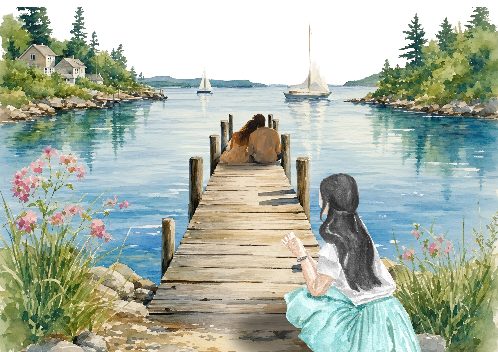

sebuah tulisan yang tidak terkirim
yang kamu cari
ternyata nggak ada di
aku, ya?
Tentang seseorang yang datang, membuat harapan tumbuh, lalu kembali ke masa lalu.
musik untuk menemani membaca
belum diputar
